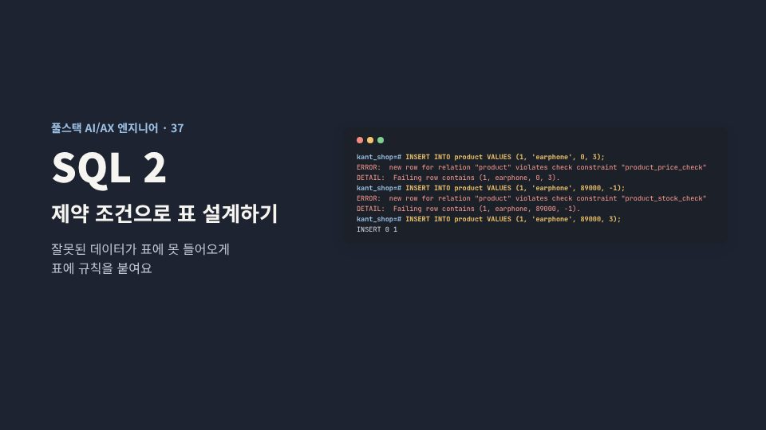
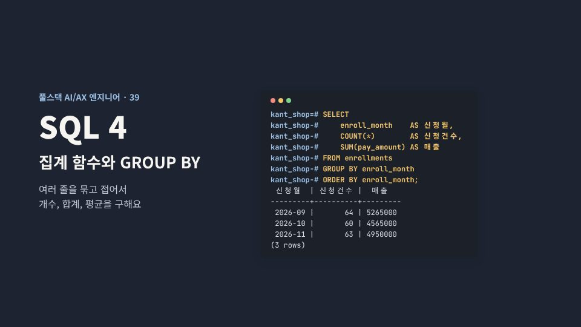
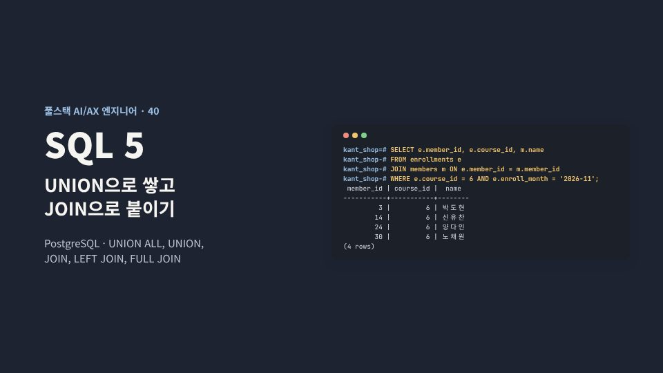
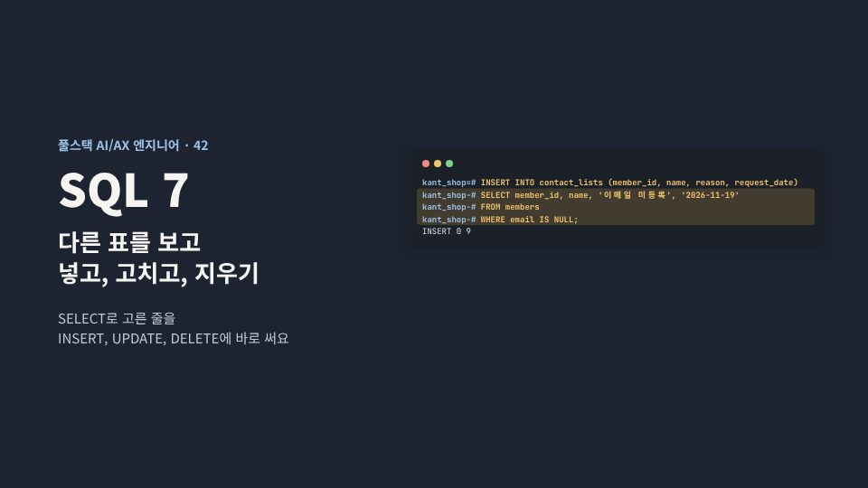

3단계 · 데이터 저장하고 꺼내기
SQL로 골라 보고 고치기꼭 거쳐 가요
회사 데이터는 대부분 표에 들어 있어요. 엑셀로 내려받아 손으로 고르던 일을 SQL 한 문장으로 바로 골라 보고, 고치고, 합칠 수 있어요.
이 주제를 마치면
- 필요한 줄만 조건으로 골라 볼 수 있어요
- 모아서 세고 더한 결과를 만들 수 있어요
- 두 표를 이어 붙여 한 번에 볼 수 있어요
- 여러 문장을 묶어 한꺼번에 되돌릴 수 있어요
먼저 보면 좋아요
데이터베이스 개념 표, 행, 열, 기본 키를 읽어요배우는 자료 8개
 36SQL 1 (골라 보기, 고치기, 자료형)
36SQL 1 (골라 보기, 고치기, 자료형)열마다 자료형을 고르고, 표에서 필요한 줄만 골라 보고 고치고 지워요

37SQL 2 (제약 조건으로 표 설계하기)표에 NOT NULL, UNIQUE, CHECK, 기본 키, 외래 키를 붙여 잘못된 행이 들어오는 순간 PostgreSQL이 막게 해요
 38SQL 3 (조건 조합과 CASE)
38SQL 3 (조건 조합과 CASE)AND와 OR를 괄호로 묶고, CASE로 줄마다 값을 붙이고, 기준 여러 개와 빈칸 자리까지 정해 줄을 세워요

39SQL 4 (집계 함수와 GROUP BY)여러 줄을 COUNT, SUM, AVG로 접고, GROUP BY로 묶어 묶음마다 세고, HAVING으로 묶음을 골라요

40SQL 5 (UNION과 JOIN으로 결과 합치기)결과 두 개를 UNION으로 위아래로 잇고, 두 표를 JOIN으로 옆에 붙여 신청 번호 옆에 회원 이름과 강좌 이름을 보여 줘요
 41SQL 6 (서브쿼리)
41SQL 6 (서브쿼리)괄호 안 SELECT가 먼저 값, 목록, 표가 되게 해서 평균과 비교하고 목록으로 고르고 임시 표로 다시 묶어요

42SQL 7 (다른 표를 보고 넣고, 고치고, 지우기)SELECT로 고른 줄을 INSERT, UPDATE, DELETE에 붙이고 EXISTS로 다른 표에 있는지 물어서 넣고 고치고 지워요
 43SQL 8 (트랜잭션)
43SQL 8 (트랜잭션)문장 여러 개를 BEGIN으로 묶고 COMMIT으로 확정하거나 ROLLBACK으로 한꺼번에 되돌려서, 실수한 UPDATE와 DELETE를 살려요